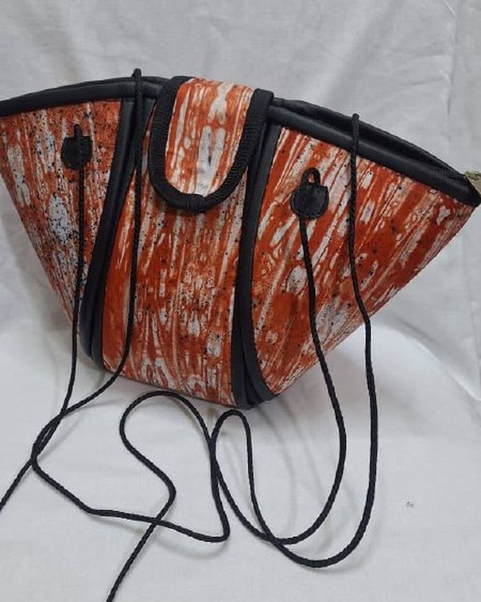
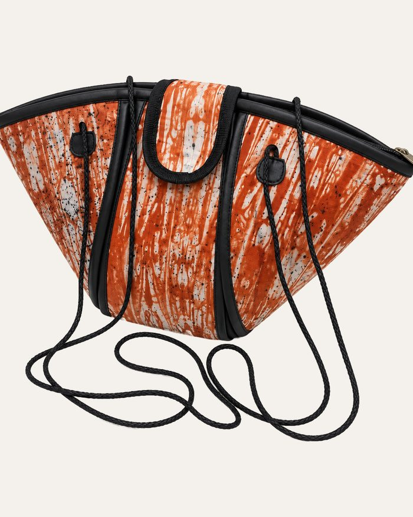
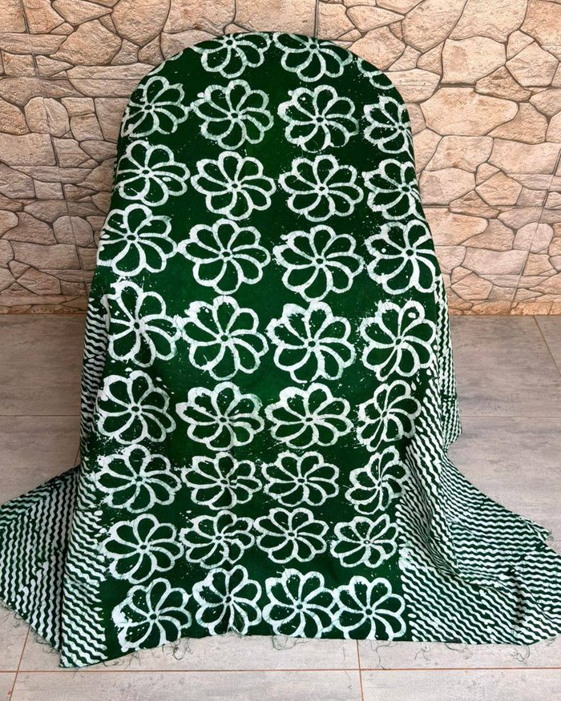
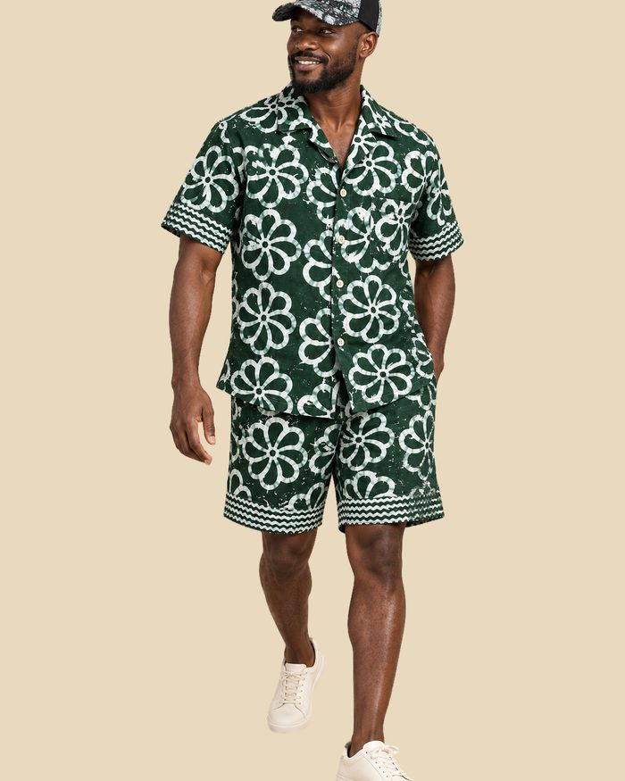
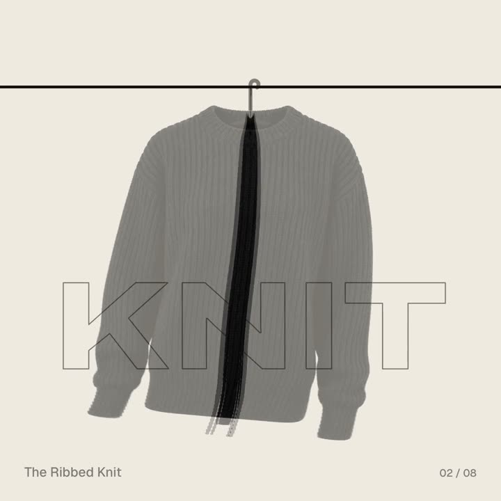
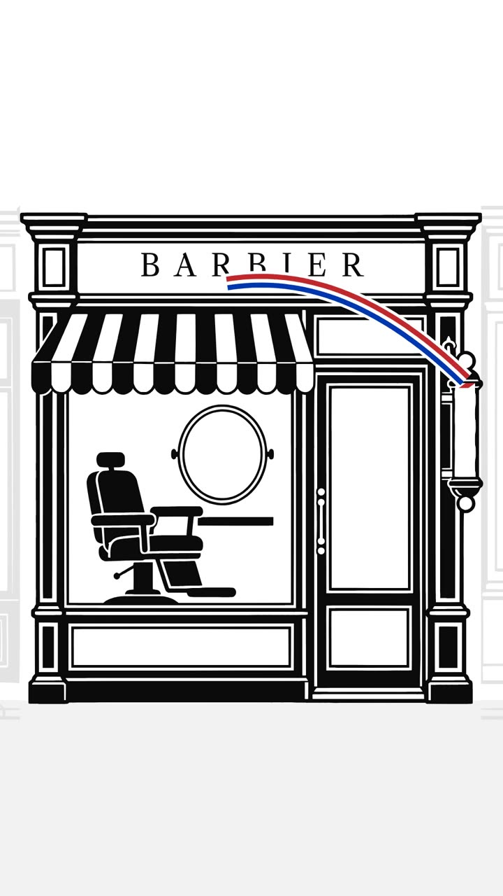
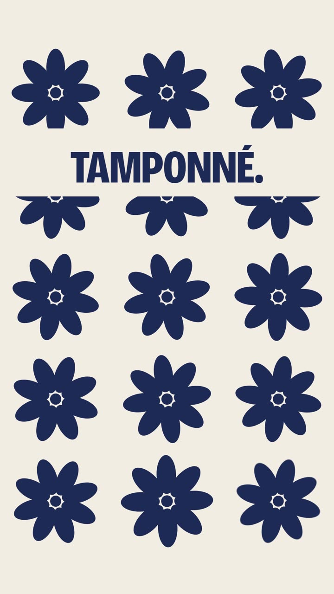
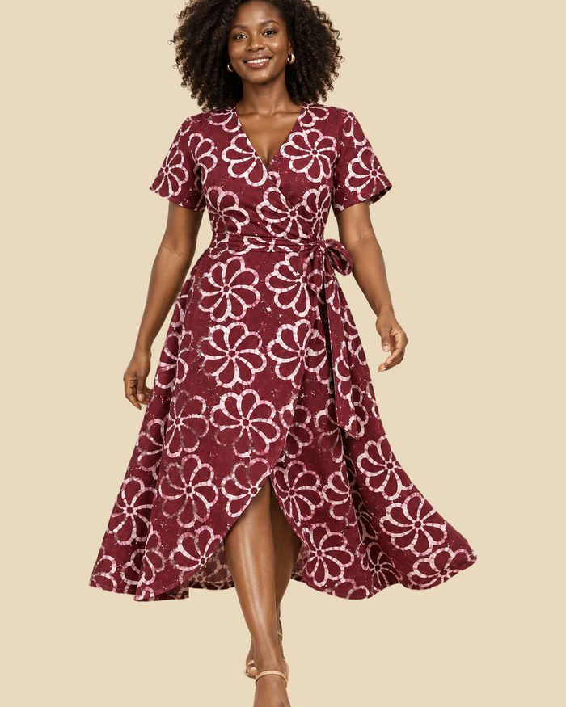
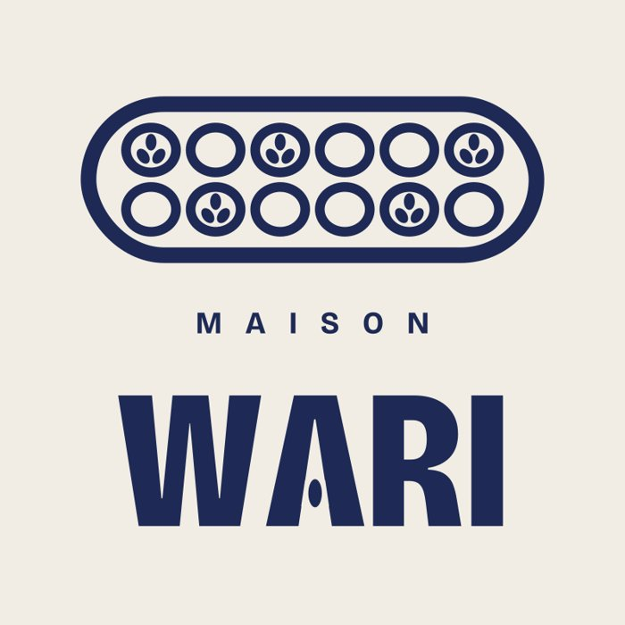

Ce que tu vas obtenir
L'exemple qui suit tout le guide, c'est Maison Wari, une boutique de vêtements et d'accessoires en tissu teint à la main. Nom, logo, animation, musique, bruitages et voix off : tout a été fait avec Claude, à partir de quelques photos.
Une vraie vidéo
Un MP4 vertical d'environ 20 secondes, prêt à publier sur TikTok, Instagram ou WhatsApp.
Musique et bruitages
Composés par Claude pour ta pub, calés sur chaque mouvement. Rien à télécharger.
Une voix off
En option, avec ElevenLabs : une voix qui colle à ton commerce, sur ton texte.
Ce qu'il te faut
Claude
Un abonnement payant, avec l'exécution de code activée dans les réglages. C'est ce qui permet à Claude de fabriquer la vidéo.
ChatGPT
Pour générer les images qui manquent : photos produit propres, produits portés, logo si besoin.
ElevenLabs
Seulement si tu veux une voix off : un compte ElevenLabs et son connecteur activé dans Claude.
Étape 1 · Rassembler ce que tu as
Claude va te demander le nom de ton commerce, ce que tu fais, ce qui te rend unique, ton logo et tes photos. Prépare-les avant. Et si quelque chose manque, ce n'est pas bloquant.
Tu as un logo
Joins-le, en PNG si possible. Sinon, Claude le crée en typographie directement dans l'animation, avec un symbole lié à ton activité. C'est ce qu'on a fait pour Maison Wari.
Tes photos sont moyennes
Floues, mal éclairées, fond chargé ? ChatGPT les régénère proprement sur fond blanc, sans changer le produit. Claude peut ensuite les détourer.
Pas de photo portée
Tu n'as que le tissu ou le produit seul ? ChatGPT génère une photo réaliste de ton produit porté ou en situation.


À gauche, la photo d'origine. À droite, la même pièce régénérée par ChatGPT sur fond blanc : même forme, mêmes motifs, prête à être détourée et animée.


Étape 2 · Choisir ton style
Chaque pub a sa direction. Regarde ces trois exemples et décris à Claude ce que tu veux, avec tes mots : l'ambiance, les couleurs, le type de typo.

DRAPE, marque de vêtements : crème et camel, un cintre qui guide tout le film.

Lucien, barbier : noir et blanc, un liseré tricolore qui mène jusqu’à la boutique.

Maison Wari : typo grasse, indigo et terracotta, une graine qui devient motif.
Étape 3 · Coller le prompt de départ
Ouvre une nouvelle conversation dans Claude, colle ce prompt, et remplis la ligne du style si tu la connais déjà. Claude commence par te poser ses questions : réponds et joins ton logo et tes photos.
Étape 4 · Valider la proposition
Avant d'animer quoi que ce soit, Claude te répond en trois parties. Prends le temps de les lire : c'est ici que se joue la qualité de la pub.
Le concept
L'élément conducteur, la fin sur ton logo et la palette. Si l'idée ne te parle pas, demande-lui trois autres pistes.
Les images
La liste de ce qui manque, avec un prompt ChatGPT prêt à coller. Cinq images maximum.
La voix off
Le texte proposé. Vérifie-le mot pour mot : c'est ta marque qui parle.
Étape 5 · Générer les images dans ChatGPT
Colle dans ChatGPT le prompt que Claude t'a donné, puis renvoie les images à Claude. Si tu veux préparer tes photos toi-même avant, voici les deux prompts qu'on a utilisés pour Maison Wari.


Étape 6 · La voix off (facultatif)
Si tu as connecté ElevenLabs, Claude te propose deux ou trois voix. Écoute-les et choisis. Pour Maison Wari, on a pris une voix féminine, jeune, sans accent marqué.
Le connecteur
Dans Claude, active le connecteur ElevenLabs. La génération utilise les crédits de ton compte ElevenLabs.
Si ça bloque
Si Claude n'arrive pas à récupérer l'audio, télécharge le MP3 depuis ElevenLabs et joins-le dans la conversation.
Sans voix
Ça marche aussi : les mots clés à l'écran, la musique et les bruitages portent la pub.
Étape 7 · Valider sur 4 images
Avant de fabriquer la vidéo complète, Claude te montre 4 images fixes tirées de l'animation. C'est le moment de corriger le look : typo, couleurs, place du logo. Corriger une image coûte bien moins cher que refaire toute une vidéo.
Étape 8 · Le rendu en MP4
Une fois les images validées, Claude fabrique la vidéo : l'animation en 60 images par seconde, la musique, les bruitages et la voix. Il te livre un MP4 à télécharger directement dans la conversation.
Étape 9 · Corriger
La première version est rarement la bonne, et c'est normal. Donne des retours précis. Voici les phrases qui ont vraiment servi sur nos pubs : copie celles qui correspondent à ce que tu vois.
Étape 10 · Publier
Le format
Vertical 9:16, environ 20 secondes : parfait pour TikTok, Reels et le statut WhatsApp.
La légende
Le nom de ta boutique, ce que tu vends, et où te trouver ou te commander.
La suite
Garde la conversation : pour une nouvelle collection, demande une variante au lieu de tout refaire.
À retenir
Maîtriser Claude Cowork et ChatGPT pour mieux travailler
Notre formation en six séances pour déléguer de vraies tâches à l'IA, produire des livrables professionnels et automatiser le répétitif.
Voir la formationTeste, puis montre le résultat
Montre-nous ta pub dans la communauté. La chaîne sert à recevoir les prochains guides.
La chaîne
Nouveaux kits, ressources, ateliers et annonces.
La communauté
Montre ta pub, pose tes questions, partage tes astuces.